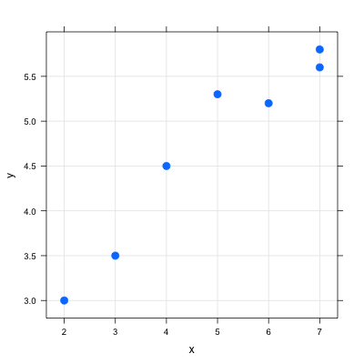

Last time we considered the following data
| y |
3 |
3.5 |
4.5 |
5.3 |
5.2 |
5.8 |
5.6 |
Here is a scatterplot of these two variables:

The basic parameters are given in the following table:
| 4.857 |
4.7 |
1.952 |
1.08 |
0.964 |
- Compute the equation for the least square regression line, and draw it on the graph.
- Compute the residuals and the overall error the line is making (the sum of squared residuals).
- Draw the residual plot.
- What percent of the variance of y is explained by this regression line? (remember, \(r^2\) measures that)
- Peter wants to use the line \(y = 2 + 0.5x\) instead, because it is easier to work with. Compute the sum of squared residuals for Peter’s line. How is he doing?